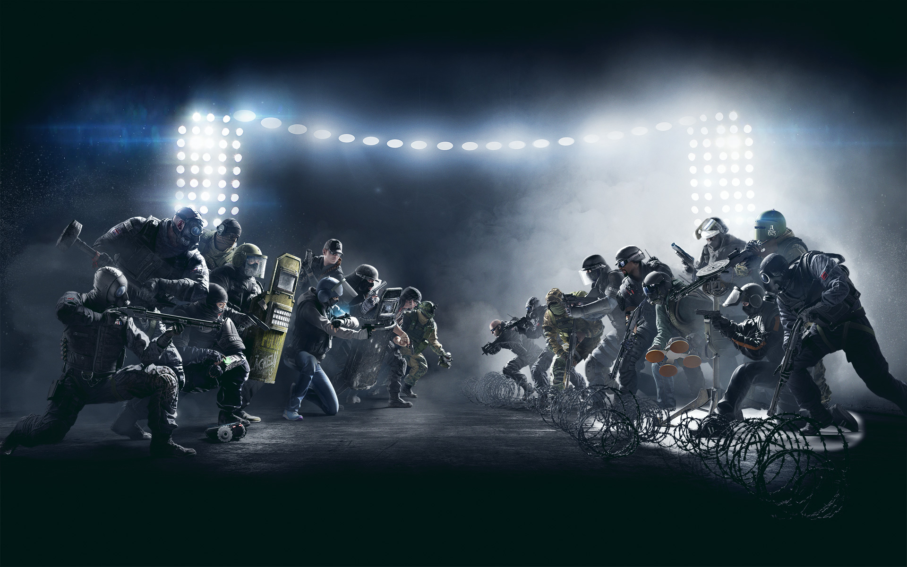

Minstens 100 Rainbow Six Siege operators
De 5v5 shooter Rainbow Six Siege krijgt in de toekomst mogelijk 100 operators of zelfs meer. Dat heeft Alexandre Remy, merkdirecteur van Rainbow Six, onthuld in een interview met PC Gamer.
Hij liet het volgende weten over de Rainbow Six Siege operators:
"We zouden de game enorm kunnen uitbreiden. We overwegen om uiteindelijk 100 operators in de game te stoppen. Reken maar uit hoeveel jaar dat gaat duren. En er is geen reden voor ons om dan te stoppen."
Hoogtepunt
Rainbow Six Siege beleeft momenteel een hoogtepunt. De game is sinds Operation Health beter gebalanceerd en wordt dagelijks door 2,3 miljoen mensen gespeeld. Bovendien heeft het spel de grens van 20 miljoen geregistreerde spelers bereikt.
Eergisteren kwam de Blood Orchid DLC met drie nieuwe operators uit voor mensen die de season pass hebben van het tweede jaar. De rest kan er vanaf volgende week dinsdag mee aan de slag gaan, mits je genoeg punten hebt om ze vrij te spelen.
Rainbow Six Siege operators
Op dit moment telt de game 34 operators, dus als de uitspraak waar is en er komen in totaal daadwerkelijk 100 operators, dan kunnen we er vanuit gaan dat Ubisoft de game de komende jaren blijft voorzien van updates. Nu de game beter gebalanceerd is, zal het mogelijk sneller gaan.